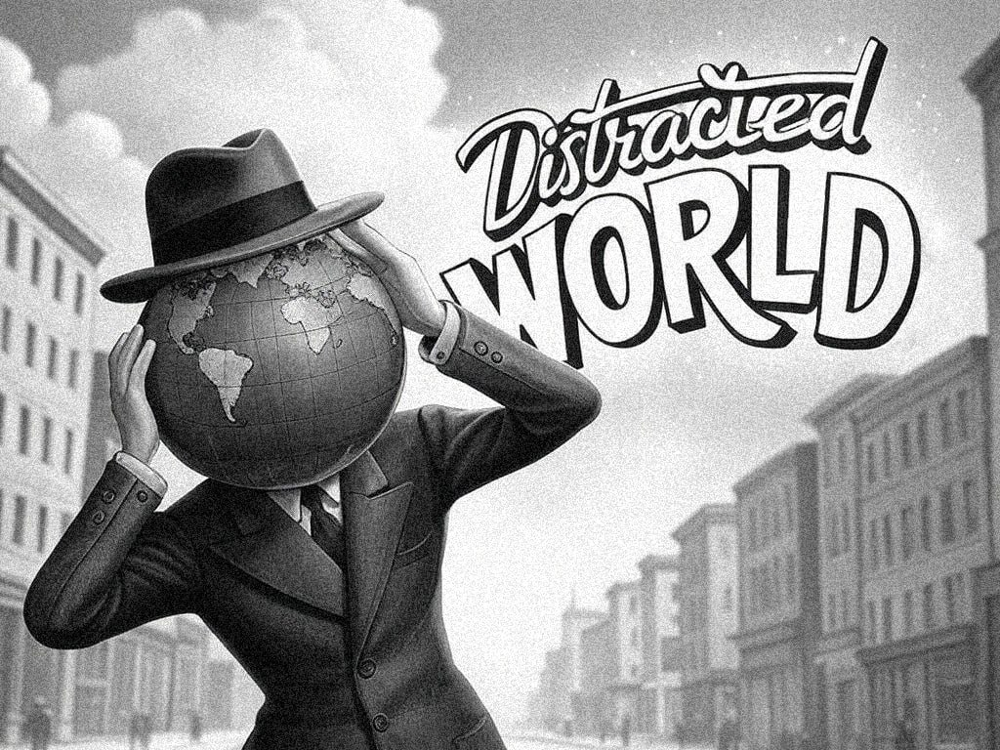

Welcome, Traveler, to a World… Distracted.
Imagine going back in time, like in old black-and-white cartoons! Radios played jazz, but just like today, people often felt lost because of *distractions*.
This website is like a map to help you find your way when your brain feels pulled everywhere at once. Here, we learn how to quiet the noise around us, focus our minds, and get to know ourselves better.
what is 'Distracted World'? It's a special way to think about how we can *wake up* and escape the things that stop us from doing our best work or reaching our goals. Things like getting easily side-tracked or spending too much time scrolling can really hold us back.
This site is full of ideas and information to help you improve yourself and grow. Becoming great isn't instant magic! It comes from the small, good choices and actions you take every single day.
Sometimes, it feels like our minds are always buzzing, looking for the next notification or exciting thing. This can make it hard to concentrate. But you *can* get your focus back! You can reset your mind and become the amazing person you're meant to be. It's time to level up!
Meet Di-Mind! He's a special character here to help you on this journey. Want to know more about him and how he helps organize thoughts? Check out the 'Organized WORLD' section!
Distracted WORLD
In a Distracted world, people often escape their day-to-day struggles by being preoccupied with the wrong things...
Organized WORLD (Meet Di-Mind)
In the black-and-white world of the 1930s, where jazz tunes float through the air...
Blog
Latest thoughts, insights, and updates from the world of Ki, focus, and escaping distractions...
Looking for wallpapers?